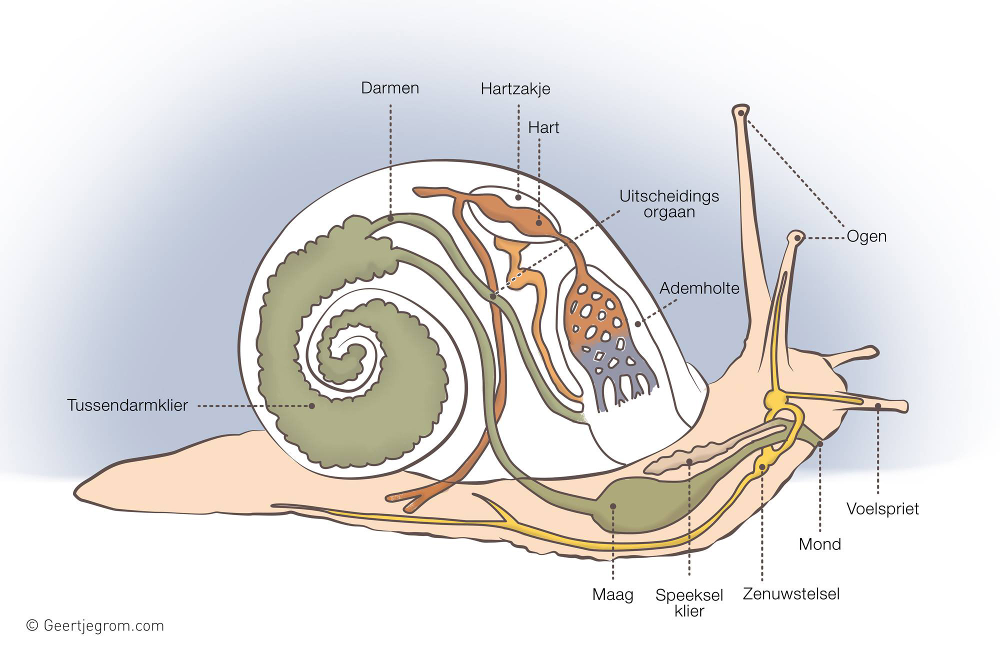
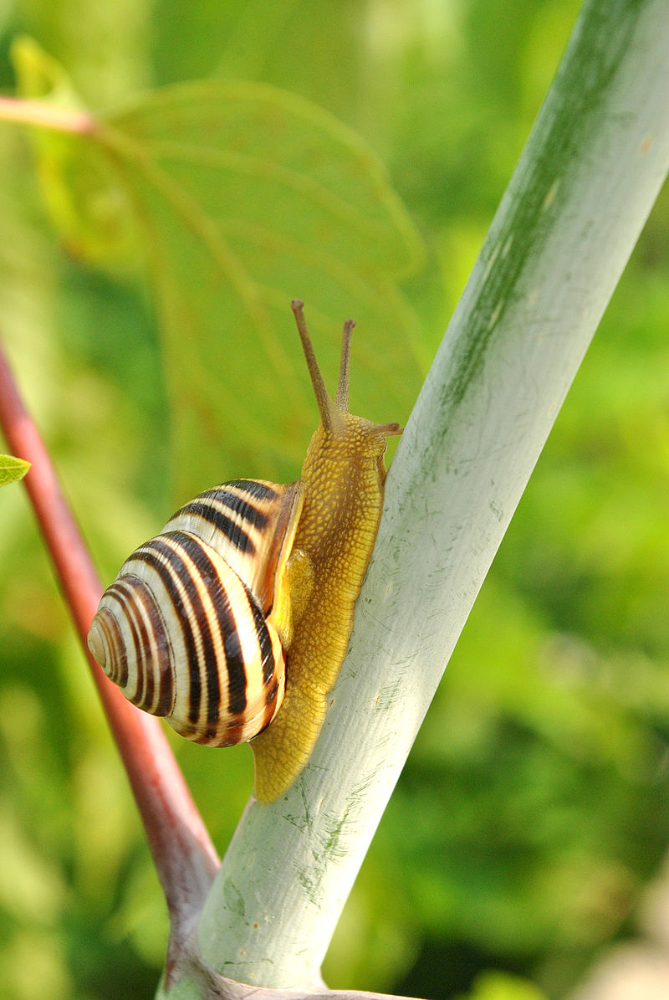

Тіло складається з голови, тулуба і ноги. Верхня частина тулуба закручена у вигляді спіралі і називається черепашка. Закручена вона зазвичай вправо, але існує аномалія, при якій черепашка закручена вліво. На голові щупальці, ротовий отвір, очі.
Равлик (Helix aspersa), або равлик садовий — молюск класу черевоногих з зовнішньою черепашкою. Вид поширений в усіх країнах світу, але найбільше в країнах Західної, Східної Європи, країнах Середземноморського регіону.
